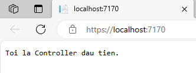

Thêm một Controller
Nội dung bài học
Trong bài Giới thiệu ASP.NET Core, chúng ta đã tìm hiểu tổng quan, cách tạo một ứng dụng ASP.NET Core MVC và lý do chọn ASP.NET Core MVC như là một lựa chọn tối ưu cho những nhà phát triển Web vừa mới làm quen với môi trường .NET hay đang muốn xây dựng một ứng dụng ASP.NET hoàn toàn mới.
Mô hình MVC
Một ứng dụng web gồm 3 phần chính: Giao diện người dùng (UI), dữ liệu từ người dùng (Data) và xử lý dữ liệu theo các quy tắc nghiệp vụ mà ứng dụng hướng đến. Công nghệ ASP.NET truyền thống như ASP.NET Web Forms tích hợp chung cả 3 phần khiến cho ứng dụng trở nên cồng kềnh, khó đọc và khó bảo trì cho đến khi xuất hiện ASP.NET MVC.
Với việc phát triển ứng dụng ASP.NET dùng mô hình MVC, các thành phần giao diện, xử lý nghiệp vụ và dữ liệu người dùng được tách bạch trong 3 thành phần:
- Model (chữ M): Là thành phần chứa các lớp thể hiện dữ liệu người dùng
- View (chữ V): Là thành phần hiển thị dữ liệu người dùng, nghĩa là cho phép người dùng nhập dữ liệu, xem dữ liệu từ cơ sở dữ liệu
- Controller (chữ C): Là thành phần chứa các lớp xử lý và hồi đáp các yêu cầu từ người dùng theo các quy tắc nghiệp vụ
Trong bài Giới thiệu ASP.NET Core chúng ta đã tạo một ứng dụng ASP.NET Core dùng mô hình MVC quản lý sách tên MVCBooks và để ý rằng trong cửa sổ Solution Explorer có 3 thư mục Models, Views và Controllers tương ứng 3 thành phần của mô hình MVC.
Việc phân chia các thành phần trong mô hình MVC làm cho việc quản lý độ phức tạp khi phát triển một ứng dụng web trở nên dễ dàng và hiệu quả hơn bởi vì nó cho phép chúng ta làm việc trên một thành phần của ứng dụng như Views, Models hay Controllers tại một thời điểm mà không ảnh hưởng đến các thành phần khác. Chúng ta sẽ khám phá các thành phần này cụ thể hơn trong quá trình xây dựng ứng dụng MVCBooks.
Thêm một Controller đến ứng dụng ASP.NET Core
Trong bài viết này chúng ta sẽ thêm một Controller đến ứng dụng ASP.NET Core, cụ thể hơn là ứng dụng MVCBooks bằng cách nhấn chuột phải vào thư mục Controllers trong cửa sổ Solution Explorer chọn Add > Controller...:
Kế tiếp chọn MVC Controller – Empty trong hộp thoại Add New Scaffold Item và nhấn nút Add
Cuối cùng, trong hộp thoại Add New Item - MVCBooks gõ FirstController.cs trong mục Name (Mặc định là HomeController1.cs) và nhấn Add.
Như vậy, chúng ta đã thêm một Controller tên FirstController trong thư mục Controllers từ cửa sổ Solution Explorer (bên cạnh HomeController mặc định)
* Chú ý: Tên một Controller là sự kết hợp của một từ bất kỳ do chúng ta định nghĩa (như First hay Home) và từ thứ hai là Controller.
Nội dung mặc định của tập tin FirstCotroller.cs là:
Thay đổi hàm Index như sau:
Thực thi ứng dụng bằng cách chọn Debug > Start Without Debugging, địa chỉ trên trình duyệt là https://localhost:7170/ với giao thức HTTPS và vị trí web server cục bộ (localhost) kết hợp với cổng TCP (7170). Địa chỉ này khác nhau tùy theo máy cá nhân.
Sau dấu / của địa chỉ trên thêm vào từ First (địa chỉ lúc này là https://localhost:7170/First ) và nhấn enter:
Vì sao chúng ta gõ First ở đây?
Thực thi các chức năng từ các trang Controllers trong ASP.NET Core
MVC sẽ thực thi các lớp controller phụ thuộc vào URL. Mặc định, URL được sử dụng bởi MVC có định dạng quy định tại tham số pattern của phương thức MapControllerRoute như sau:
/[controller]/[action]/[tham số]
Định dạng như trên trong ASP.NET Core gọi là định tuyến đến các hành động của controller (URL Routing logic) có thể được thiết lập trong tập tin Program.cs (gần cuối nội dung tập tin)
Trong phần đặt tên cho tập tin Controller chúng ta có lưu ý rằng, phần tên là sự kết hợp của một từ do người dùng định nghĩa (First hay Home) và từ Controller. Từ do người dùng định nghĩa chính là tham số {controller} tại mục pattern.
Khi chúng ta thực hiện ứng dụng lần đầu tiên với URL là https://localhost:7170/ thì HomeController sẽ thực thi hành động của nó, URL cụ thể trong trường hợp này là https://localhost:7170/Home , tuy nhiên chúng ta định nghĩa Home là Controller mặc định nên từ Home có thể bỏ qua trong URL. Để kiểm chứng điều này, chúng ta thay đổi từ Home bằng từ First tại {controller}
Lưu và thực thi với Debug > Start Without Debugging
Lúc này FirstController là mặc định nên chúng ta không cần gõ thêm từ First trong URL. Gõ lại Home để HomeController là phương thức mặc định.
Mỗi phương thức phạm vi public trong một Controller là tham số {action} tại patern trong định dạng URL. Mặc định, phương thức tên Index sẽ thực thi đầu tiên khi gọi một Controller.
Ví dụ URL https://localhost:7170/First thực thi phương thức Index của FirstController. (URL đầy đủ có thể là https://localhost:7170/First/Index )
Cũng cần để ý rằng, trong một lớp Controller chứa nhiều phương thức public, ví dụ bổ sung thêm phương thức Welcome đến lớp FirstController như sau:
Phương thức Index là mặc định nên có thể được bỏ qua nhưng muốn thực thi Welcome thì cần chỉ rõ tên phương thức này: https://localhost:7170/First/Welcome
Chuỗi truy vấn (query string) và cơ chế model binding
Để hiểu về tham số thứ 3 ({id?} tại pattern) trong định dạng URL chúng ta thay đổi phương thức Welcome như sau:
Một số lưu ý:
- Thêm hai tham số đến phương thức Welcome, trong đó tham số Tuoi được khởi tạo bằng 1 nếu không có giá trị nào được gán đến tham số này.
- Dùng phương thức HtmlEncoder.Default.Encode (thuộc namespace System.Text.Encodings.Web) để bảo vệ ứng dụng khỏi các mã độc từ dữ liệu người dùng (ví dụ các đoạn mã JavaScript).
- Dùng tính năng String Interpolation của C# (có thể xem lại tại đây ) với định dạng chuỗi $"Xin chao {HovaTen}, Co phai tuoi cua ban la: {Tuoi}"
Thực thi ứng dụng với URL https://localhost:7170/First/Welcome

Bây giờ, thay đổi lại URL thành https://localhost:7170/First/Welcome?HovaTen=Minh&Tuoi=35 , kết quả:
Các giá trị (Minh và 35) được chuyển đến hai tham số HovaTen và Tuoi từ phương thức Welcome thông qua chuỗi truy vấn (query string). Chuỗi truy vấn là một phần của URL sau dấu ? và các tham số được nối với nhau bởi dấu &.
Chúng ta xem lại phần định nghĩa URL từ tập tin Program.cs:
Định nghĩa mặc định cho tham số thứ 3 của URL là id? với id là tên tham số mặc định và dấu ? là dấu ngăn cách mặc định giữa chuỗi truy vấn và phần còn lại của URL. Thay đổi id? bằng HovaTen?
pattern: "{controller=First}/{action=Index}/{HovaTen?}";
Thực thi lại ứng dụng với URL https://localhost:7170/First/Welcome/Minh?Tuoi=35 sẽ cho kết quả như khi dùng URL https://localhost:7170/First/Welcome?HovaTen=Minh&Tuoi=35

Để ý rằng, vì chúng ta thay đổi tên mặc định cho tham số thứ 3 (Parameters) từ id sang HovaTen, đồng thời HovaTen là tham số của phương thức Welcome nên chúng ta chỉ cần truyền giá trị (Minh) mà không cần chỉ rõ tên tham số (HovaTen).
Bí ẩn phía sau cách hoạt động của tham số thứ 3 (Parameters) và cách các giá trị được chuyển đến các tham số của phương thức Welcome thông qua chuỗi truy vấn chính là cơ chế model binding. Cơ chế model binding giúp:
- Nhận dữ liệu từ các nguồn khác nhau như từ các trường của form hay các chuỗi truy vấn
- Cung cấp dữ liệu đến các trang Controllers và Razor thông qua các tham số phương thức (như các ví dụ nêu trên) hay các thuộc tính phạm vi public.
- Chuyển dữ liệu kiểu chuỗi sang các kiểu .NET
- Cập nhật thuộc tính của các kiểu phức tạp.
Cơ chế model binding sẽ tìm các gia trị từ các:
- Tham số của các phương thức từ các Controllers mà yêu cầu người dùng hướng tới
- Tham số của các phương thức từ các trang Razor mà yêu cầu người dùng hướng tới
- Các thuộc tính public của một controller hay lớp PageModel
Tham khảo chi tiết về model binding tại đây.
Qua bài này chúng ta đã cùng tìm hiểu cách thức thêm thành phần Controller đến ứng dụng ASP.NET Core và cũng đã làm quen (hay nhắc lại) các khái niệm như URL routing logic, model binding, query string, string interpolation. Hai thành phần còn lại là View (chữ V) và Model (chữ M) của mô hình MVC chúng ta sẽ tìm hiểu trong các bài viết tiếp theo.